Introducing Gemini 3.8 Flash and 3.8 Flash Cyber
Sep 02, 2026
|Our newest Gemini models deliver next-generation intelligence for agentic workflows and cybersecurity.
Raluca Ada Popa
Gemini Security Lead, Google DeepMind

Building on the momentum of 3.7 Flash from three weeks ago and marking our third Flash release in only six weeks, today we’re introducing Gemini 3.8, our best reasoning and coding model yet, at the same speed and low cost of 3.7. Gemini 3.8 introduces 2 variants:
- Gemini 3.8 Flash: our most intelligent workhorse model, delivering significant improvements from 3.7 Flash across software engineering, agentic tasks, and critical, multi-step reasoning in specialized domains. It is available at the same introductory price 1 as 3.7 Flash at $0.75 per million input tokens and $3.75 per million output tokens.
- Gemini 3.8 Flash Cyber: our most capable cybersecurity model with frontier-level performance in vulnerability detection and automated patching, available to trusted defenders through our new Fairwind Program.
While tailored for different deployment environments, both of today's releases are powered by the same foundational intelligence, and further accelerated by long-running agentic loops designed to recursively evaluate and refine the underlying models. The significant coding and reasoning gains across this shared core were driven by a number of innovations, including rigorous training in the highly demanding domain of cybersecurity.
Gemini 3.8 Flash: built for long-horizon coding and autonomous agents
Gemini 3.8 Flash delivers substantial gains from 3.7 Flash, often approaching the performance of higher-cost frontier models.
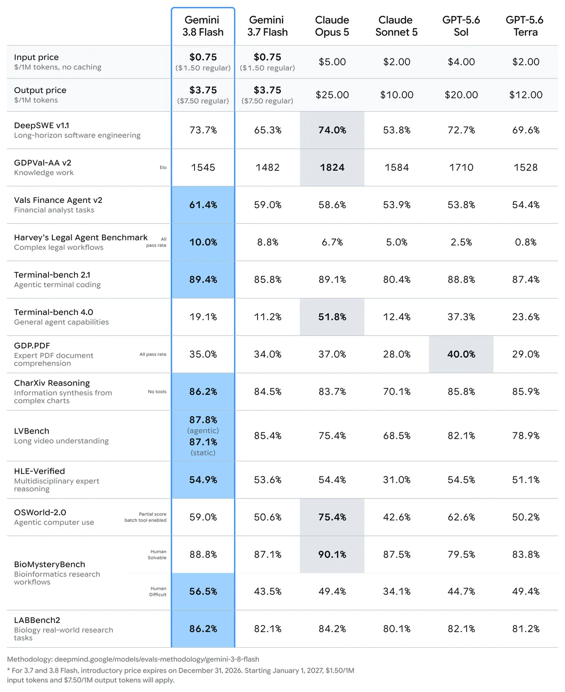
On DeepSWE v1.1 (Long-Horizon Software Engineering) 3.8 Flash outperforms most larger frontier models in autonomously solving complex engineering problems end to end, only at a fraction of the cost.
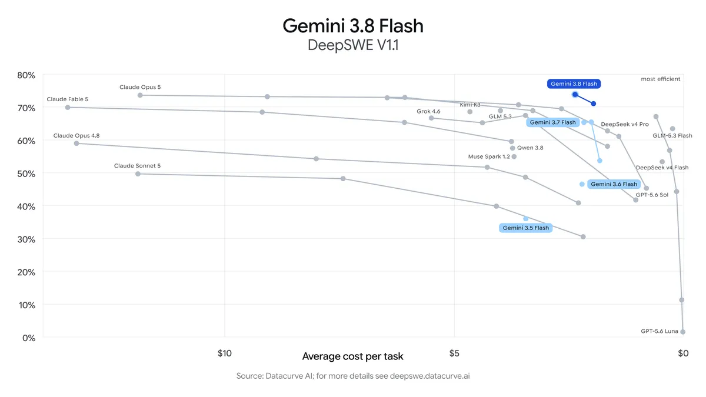
Additionally, 3.8 Flash exhibits the dependability required for critical enterprise autonomy, across specialized knowledge domains. In quantitative and professional fields that require advanced analysis and reporting, 3.8 Flash outperforms 3.7 Flash and other frontier models in benchmarks like Vals Finance Agent V2 and Harvey's Legal Agent Benchmark. 3.8 Flash also achieves a 54.9% on HLE-Verified, demonstrating its ability to handle multi-step reasoning across STEM, humanities, and professional fields.
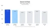
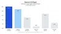
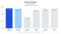
These performance gains stem from a core design choice: 3.8 Flash works harder. On complex tasks, it exhibits greater diligence — executing extra reasoning steps, and calling tools iteratively. At times, the model might use more tokens to maximize performance, especially at higher effort levels.
For applications where compute efficiency is the primary constraint, developers can utilize lower effort levels to minimize token overhead or continue to rely on Gemini 3.7 Flash, which remains fully supported for efficiency-first workloads.
Gemini 3.8 Flash built this game with a simple prompt using a looping instruction in Google Antigravity. The game uses puzzles, environmental storytelling, and textures generated with Nano Banana to create an immersive 3D level in which you play a wizard navigating a castle.
Gemini 3.8 Flash builds a fully functional DOS version of Google Maps in a single prompt in Google Antigravity that is fully playable with locations, directions, and Street View.
Explore realtime cross-sections, 2D projections, scientific explanations in a topographic map of famous geographical sites built with Gemini 3.8 Flash in Google Antigravity using real datasets from the U.S. Geological Survey.
Hardware Anatomy is an interactive 3D visualizer built with Gemini 3.8 Flash in Google AI Studio that generates realistic Three.js renderings of physically-proportioned teardowns for hardware devices. It automatically decomposes devices into layers you can explode and inspect with a deconstruction slider.
Gemini 3.8 Flash Cyber: expert cyber performance
Gemini 3.8 Flash Cyber, available to a set of trusted defenders via the Fairwind Program, provides a decisive advantage in today’s complex cybersecurity landscape, with the Flash speed and cost that enables quick iteration.
Autonomous vulnerability discovery
On the standard industry benchmark for finding vulnerabilities, CyberGym, Gemini 3.8 Flash Cyber demonstrates frontier-level performance in autonomous vulnerability discovery. It surpasses both 3.5 Flash Cyber as well as significantly larger frontier models.
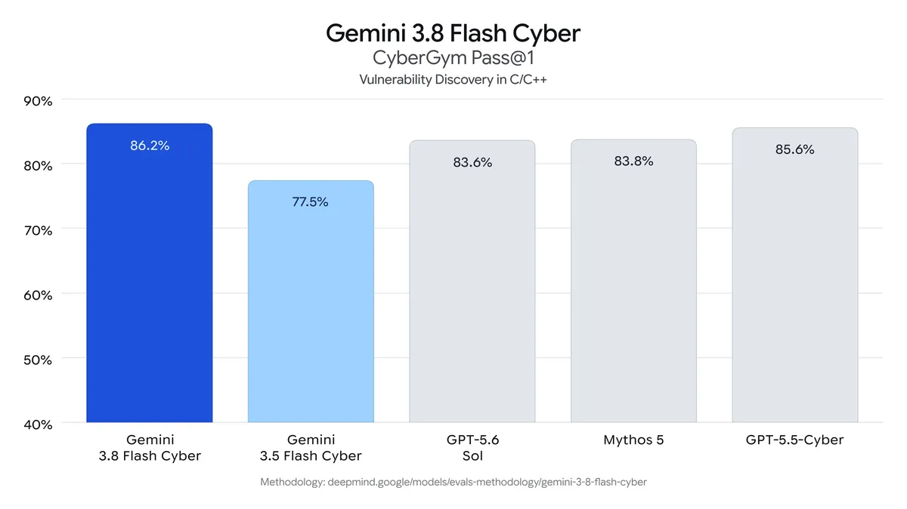
To better capture real-world defensive needs which are not limited to just C/C++ codebases like in CyberGym, we also evaluated Gemini 3.8 Flash Cyber against a comprehensive internal benchmark in which the model has to discover a wide range of vulnerabilities across complex codebases spanning 20 programming languages. Here, the model showcases an impressive leap over our previous models and reaches a success rate exceeding 70%.
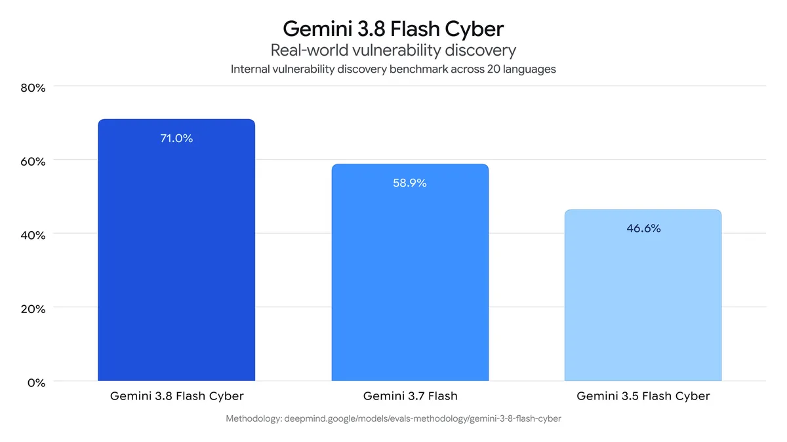
Automated patching
With Gemini 3.8 Flash Cyber, we focused specifically on equipping defenders with expert capabilities that give them an advantage over attackers. This is why we have invested in vulnerability fixing from the start, and prioritized it over offensive capabilities like exploitation.
CWE-Bench, run by Collinear, is a challenging external benchmark for patching capabilities. On this benchmark, Gemini 3.8 Flash Cyber is on the Pareto frontier: with a pass@1 of 47.2% compared to a leading frontier model at 47.8%, yet offered at a significantly lower cost.
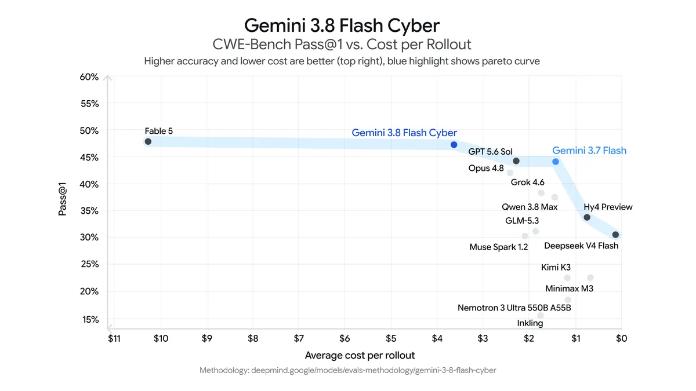
Real-world impact: securing Google’s code
We’re already using Gemini 3.8 Flash Cyber to secure code across Google. For example:
- The Chrome Security team found that 3.8 Flash Cyber produced 2.6 times more correct patches to vulnerabilities in Chrome than the best commercial models that are much larger.
- Wiz found that Gemini 3.8 Flash Cyber achieves +7.5-9.7% higher recall on their internal penetration testing benchmark for a 2.3-5.2x lower cost compared to other leading frontier models.
- Google’s Cloud Vulnerability Research team leveraged the 3.8 Flash Cyber model to find a critical foundational vulnerability in less than 2 hours, a vulnerability for which research and discovery usually takes months.
What our Fairwind Program partners are saying
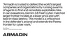
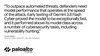
Built with safety in mind
3.8 Flash ships with safeguards against misuse in the domains of Chemical, Biological, Radiological, and Nuclear (CBRN) and cyber offense, while enabling beneficial use cases, as per our Frontier Safety Framework. 3.8 Flash Cyber ships with a more permissive set of mitigations for cybersecurity, and as such, is only available to trusted defenders who require a more comprehensive set of cyber capabilities.
Gemini 3.8 models have also made a significant leap in prompt injection robustness as measured by Gray Swan, protecting Gemini model users from prompt-injection related malicious attacks.
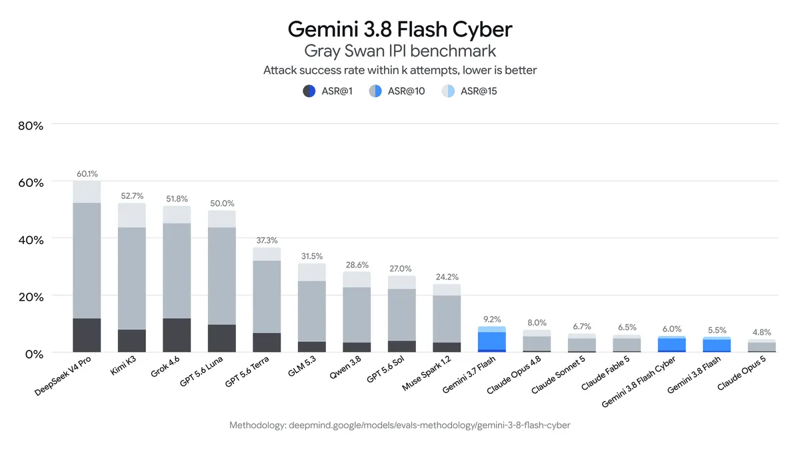
Gemini 3.8 Flash and Cyber: get started today
- Developers: Build with 3.8 Flash and explore agent-first workflows in Google Antigravity or start building today in the Gemini API via Google AI Studio and Android Studio, or generate UIs in Stitch. Get started with our developer docs.
- Enterprises: Access 3.8 Flash in Gemini Enterprise.
- Consumers: 3.8 Flash is available to Google AI Pro and Ultra subscribers across the Gemini app, AI Mode in Google Search and Gemini in Google Sheets.
- Cyber: Through our new Fairwind Program, we’re providing trusted government authorities, as well as critical infrastructure operators and software maintainers with prioritized access to Gemini 3.8 Flash Cyber. Apply for access.